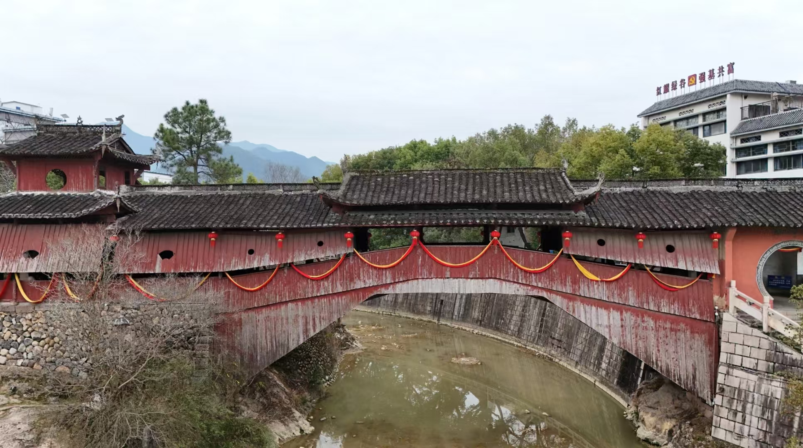

兰溪桥
兰溪桥位于浙江省庆元县五大堡乡西洋村西洋殿旁，始建于明万历二年（1574年），清乾隆五十九年（1794年）重修，因原址纳入兰溪桥水库储水区，1984年按原貌迁建至现址。该桥为木拱伸臂廊屋桥，巧妙连接西洋殿与公路，全长48.12米，面阔5米，净跨36.8米，拱高9.8米，是全国单孔跨度最大的木拱廊桥，设廊屋19间。桥体采用单孔八字形木拱架，由17组圆木纵横拼接而成，廊屋为九檩四柱结构，翼角饰牡丹卷草状装饰，上层风雨板开扇形、桃形等小窗。
木拱廊桥是一种桥廊一体的古老而独特的桥梁样式。它以“编木成拱”为核心技艺，通过榫卯结构将木材纵横交错搭接，形成拱架，全程不用一钉一铆，结构巧妙而坚固。这种桥梁技术可追溯至北宋《清明上河图》中的汴水虹桥。现存约110座古代木拱廊桥主要集中分布于中国福建东北部和浙江西南部的山区。2009年，其营造技艺被列入联合国教科文组织《急需保护的非物质文化遗产名录》。木拱廊桥不仅是重要的交通设施，桥上廊屋还为行人提供遮风避雨的休憩空间，并常作为祭祀、集会等乡村公共活动的中心，承载着丰富的文化内涵。
兰溪桥位于浙江省庆元县五大堡乡西洋村西洋殿旁，始建于明万历二年（1574年），清乾隆五十九年（1794年）重修，因原址纳入兰溪桥水库储水区，1984年按原貌迁建至现址。该桥为木拱伸臂廊屋桥，巧妙连接西洋殿与公路，全长48.12米，面阔5米，净跨36.8米，拱高9.8米，是全国单孔跨度最大的木拱廊桥，设廊屋19间。桥体采用单孔八字形木拱架，由17组圆木纵横拼接而成，廊屋为九檩四柱结构，翼角饰牡丹卷草状装饰，上层风雨板开扇形、桃形等小窗。
如龙桥，位于浙江省丽水市庆元县举水乡月山村南。横跨于举溪，南北走向，系木拱廊桥。如龙桥始建于明初，现桥修建于明天启五年（1625年），因其势与后山山脊古松依稀相连，桥似龙首下倾而得名。如龙桥全长28.2米，净跨19.5米，矢高6.8米，面阔6米，有廊屋9间。如龙桥结构复杂，功能完备，集亭台楼阁于一体，是有明确纪年、年代最早的木拱廊桥之一。此桥建筑上具有宋代遗风，具有较高的历史、艺术和科学考察价值。
鸾峰桥（Luanfeng Bridge），又称“下党桥”“红军桥”，俗称“下党水尾桥”，是中国福建省宁德市境内过溪通道，位于寿宁县下党乡下党村南，为第六批全国重点文物保护单位“闽东北廊桥”的组成部分，是中国单拱跨度最长的木拱廊桥。鸾峰桥始建于明代中期；于清嘉庆五年（1800年）正月重建；中华人民共和国成立后，于1964年修缮；于2005年、2006年相继入选福建省省级文物保护单位和全国重点文物保护单位。鸾峰桥是单孔组合式木梁桥，桥梁全长47.6米，宽4.9米，孔跨37.2米，为南北走向。

永归桥，又名杨公桥、护龙桥、兴贤桥，位于中国浙江省丽水市庆元县城内，横跨松源溪，为东西走向廊桥。该桥始建于元大德十年（1306年），初名咏归桥，元至治年间重建时改现名，现存结构为民国十三年（1924年）重建、1983年重修成果。桥梁全长38.76米，净跨21.7米，矢高8.8米，面阔5.5米，设廊屋8间，兼具通行与休憩功能。该桥历史上屡毁屡建，见证了庆元县水系交通的发展变迁。1984年被列为县级文物保护单位，2003年拟报第五批省级文物保护单位。现存题记与碑刻保留了元代以来的修缮历史信息，是研究浙南地区古代廊桥营造技艺的重要实物资料。